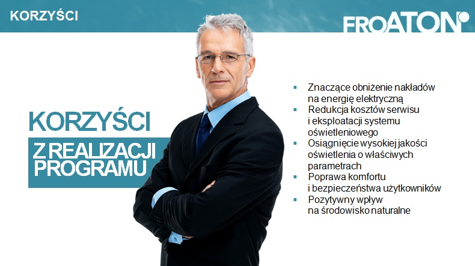
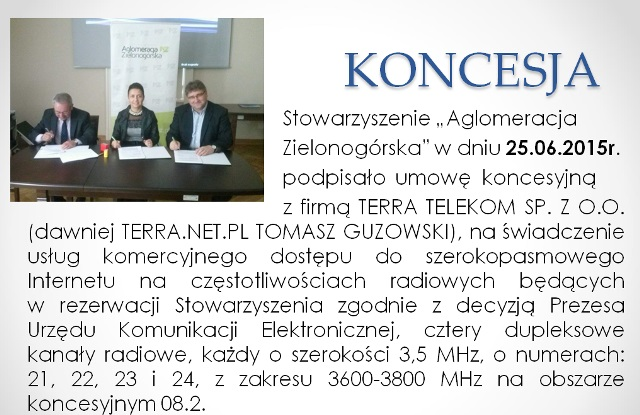
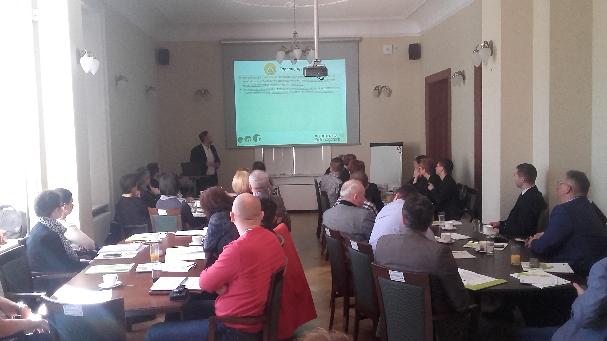
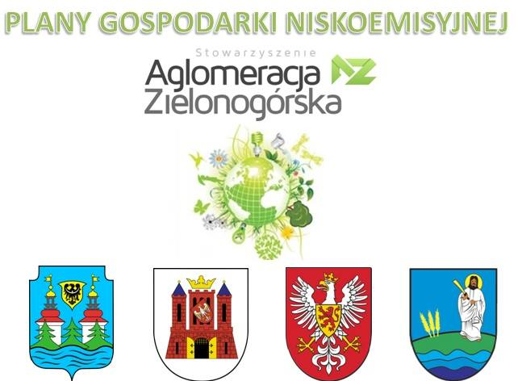
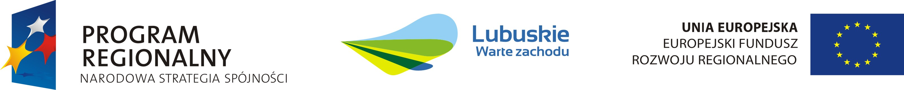

Rewitalizacja Oświetlenia

Stowarzyszenie Aglomeracja Zielonogórska wspólnie z Fundacją Rewitalizacji Oświetlenia ATON - oferuję Członkom Aglomeracji Zielonogórskiej kompleksowe wsparcie w zakresie rewitlalizacji oświetlenia.
W ramach programu jednostka samorządu terytorialnego może uzyskać bezpłatną kalkulację systemu oświetlenia ulicznego lub użytkowego, z określeniem przewidywanych ilości potrzebnych źródeł, opraw i ich mocy oraz siły strumienia. Zostaną również wskazane potencjalne oferty dostępne na rynku, spełniające założenia projektowe i tym samym gwarantujące uzyskanie przewidywanych w projekcie efektów ekonomicznych i jakościowych, oraz sposoby finansowania projektów rewitalizacji.
Otrzymane dane pozowlą JST na podjęcie kluczowych decyzji odnośnie modernizacji oświetlenia ulicznego i użytkowego na swoim terenie.
W przypadku zainteresowaniem programem rewitalizacji oświetlenia - prosimy o kontakt z biurem Stowarzyszenia "Aglomeracja Zielonogórska".
Szerokopasmowy Internet
Decyzją Prezesa Urzędu Komunikacji Elektronicznej z dnia 11 marca 2014r., Stowarzyszenie „Aglomeracja Zielonogórska” zostało podmiotem, na który została dokonana rezerwacja częstotliwości obejmującej cztery dupleksowe kanały radiowe, każdy o szerokości 3, 5 MHz z zakresu 3600-3800 MHz na obszarze środkowej i południowej części województwa lubuskiego (obszar koncesyjny 08.2) do wykorzystania w sieciach typu punkt – wiele punktów do dnia 31 grudnia 2022 r.
- Obszar koncesyjny 08.2 szczegółowo obejmuję następujące powiaty:
- zielonogórski (grodzki i ziemski);
- żarski;
- żagański;
- nowosolski;
- wschowski;
- krośnieński.
W dniu 26.06.2015r. podpisało umowę koncesyjną z firmą TERRA.NET.PL (obecnie TERRA TELEKOM SP. Z O.O.) na świadczenie usług komercyjnego dostępu do Internetu.
Działania na rzecz rozwoju szerokopasmowego dostępu do Internetu są szczególnie istotne z punktu widzenia miasteczek i wsi w województwie lubuskim, gdzie cały czas dostęp do wysokiej jakości usług w tym zakresie jest mocno ograniczony. W okresie 5 lat od daty podpisania umowy nastąpi pokrycie zasięgiem sieci przynajmniej 70% powierzchni obszaru koncesyjnego.
Zaletą inwestycji realizowanej przez firmę TERRA TELEKOM jest fakt, iż ma charakter powszechny, gdyż zasięg sieci radiowej pozwoli na objęcie swym zasięgiem nawet pojedynczych domostw oddalonych od miejskiej zabudowy. Inwestycja będzie realizowana w technologii najnowszej generacji LTE, co pozwoli uzyskać wysokie parametry łącza (prędkość od 20-100 mb/s).
Praktyczna Gmina
"Praktyczna Gmina" to cykl szkoleniowy realizowany przez Stowarzyszenie "Aglomeracja Zielonogórska" dla swoich Członków.
Cyklicznie organizowane szkolenia są odpowiedzią głównie na potrzeby środowiska samorządowego, ale także nawiązują swą tematyką do obszarów interesujących dla biznesu i nauki.
- Do tej pory zrealizowaliśmy m.in. takie szkolenia, warsztaty, czy seminaria - jak:
- Zmiany w Prawie Wodnym i Ochrona Danych Osobowych.
- Partnerstwo Publiczno-Prywatne - szansa, czy zagrożenie dla samorządów i firm?
- "Design Thinking" - innowacyjna metoda kreowania projekótw i zarządzania nimi.
- Możliwości wymiany oświetlenia ulicznego na nowoczesne oświetlenie LED.
- Perspketywy wydobycia i eksploatacji złóż miedzi i srebra w lubuskiem.
- Możliwości uzyskania dotacji dla Gmin w perspektywie finansowej UE na lata 2014-2020.
- Opracowanie Gminnych Programów Rewitalizacji.
- Tworzenie Samorządowego Centrum Usług Wspólnych.
- Nowy Ustrój Szkolny. Zmiany dotyczące szkół podstawowych i gimnazjów.
Otwarte Drzwi Do Kultury
Projekt „Otwarte Drzwi Do Kultury” upowszechnia kulturę - w szczególności sztukę filmową. Realizowany jest w formie kina objazdowego na terenie lokalnych społeczności, a seanse filmowe towarzyszą warsztatom na temat dostępu do kultury – w tym przede wszystkim korzystania z legalnych źródeł w Internecie oraz edukacji medialnej i filmowej.
Fundacja Legalna Kultura - chce uświadomić odbiorcom, które źródła kultury i zasoby w Internecie są legalne, jak można z nich bezpiecznie korzystać, czym jest prawo autorskie i własność intelektualna -czyli, w jaki sposób korzystać z kultury w sieci, wspierając jednocześnie jej twórców.
W ramach podjętej współpracy ze Stowarzyszeniem „Aglomeracja Zielonogórska” - Fundacja zaproponowała realizację II edycji projektu m.in. na terenie Gmin należących do stowarzyszenia. W ramach projektu fundacja proponuje JST realizację na ich terenie całodziennych bezpłatnych pokazów filmowych połączonych z warsztatami dla poszczególnych grup wiekowych. Projekt otrzymał dofinansowanie z Ministerstwa Kultury i Dziedzictwa Narodowego
Planowany termin realizacji II edycji projektu to jesień 2017. Gminy zainteresowane wzięciem udziału w projekcie zapraszamy do bezpośredniego kontaktu z biurem stowarzyszenia.
Plany Gospodarki Niskoemisyjnej
Stowarzyszenie „Aglomeracja Zielonogórska” decyzją Narodowego Funduszu Ochrony Środowiska i Gospodarki Wodnej otrzymało dofinansowanie na realizację projektu: „Plany Gospodarki Niskoemisyjnej dla 4 Gmin należących do Stowarzyszenia Aglomeracja Zielonogórska” ze środków Funduszu Spójności w ramach Programu Operacyjnego Infrastruktura i Środowisko 2007-2013, Priorytet IX – Infrastruktura energetyczna przyjazna środowisku i efektywność energetyczna, Działanie 9.3 – Termomodernizacja obiektów użyteczności publicznej – plany gospodarki niskoemisyjnej (PGN) – (Konkurs nr 2/POIiŚ/9.3/2013).
- Partnerami projektu są następujące Gminy:
- Bojadła
- Gubin o statusie miejskim
- Kargowa
- Skąpe
Całkowita wartość projektu to: 149 180, 00 zł z czego 126 803, 00 zł (tj. 85%) zostanie dofinansowania ze środków UE.
- Projekt zakłada realizację następujących elementów:
- Opracowanie Planów Gospodarki Niskoemisyjnej
- Stworzenie Bazy Danych
- Szkolenia Pracowników
- Informacja i promocja
- Opracowanie elementów w wykorzystywanych w opracowywanych bądź aktualizowanych planach zaopatrzenia w ciepło, energię elektryczną i gaz
- Przeprowadzenie strategicznej oceny oddziaływania na środowisko
Czas realizacji projektu: Marzec - Listopad 2015
Promocja Gospodarcza
Tytuł projektu: „Promocja gospodarcza i rozwój terenów inwestycyjnych w obszarze Lubuskiego Trójmiasta”
Beneficjent – Stowarzyszenie Lubuskie Trójmiasto
Partner - Stowarzyszenie Aglomeracja Zielonogórska
Okres realizacji projektu: 01.04.2012 – 31.12.2014
Przedsięwzięcie dotyczy promocji gospodarczej, która ma służyć stworzeniu spójnego wizerunku silnego regionu, co docelowo ma wpłynąć na zwiększenie liczby inwestycji w regionie, jak też powiązań biznesowych przedsiębiorstw, mających bezpośredni wpływ na rozwój gospodarczy gmin Aglomeracji Zielonogórskiej, do której należy beneficjent projektu (Lubuskie Trójmiasto) i całego województwa. Stowarzyszenie Lubuskie Trójmiasto przystąpiło do Aglomeracji Zielonogórskiej – stowarzyszenia większej liczby gmin z południa województwa – w celu zintensyfikowania potencjału gospodarczego. O potencjale gospodarczym Aglomeracji Zielonogórskiej świadczy liczba różnych form podmiotów gospodarczych w odniesieniu do całego województwa. W obszarze Aglomeracji Zielonogórskiej koncentruje się wiele przedsiębiorstw. Jest jednak jeszcze sporo terenów inwestycyjnych do zagospodarowania, oczekujących na inwestorów. Stwarza to konkretną potrzebę promowania ich przez Lubuskie Trójmiasto w ramach Aglomeracji Zielonogórskiej.
Działania realizowane w ramach projektu mają na celu stworzenie atrakcyjnego dla inwestorów i przedsiębiorców wizerunku regionu. Idea trzech samorządów – Zielonej Góry, miasta na prawach powiatu, gminy Nowa Sól – miasto oraz Gminy Sulechów, doprowadziła do stworzenia podstawy marki „Lubuskiego Trójmiasta”, wokół której w formalnych ramach stowarzyszenia ma szansę zaistnieć modelowy rodzaj współpracy JST, przy wykorzystaniu wspólnego potencjału na rzecz stworzenia najbardziej optymalnych warunków rozwoju. Projekt będzie zlokalizowany na terenie Aglomeracji Zielonogórskiej - stowarzyszenia gmin leżących na terenie 8 powiatów z południa województwa lubuskiego: zielonogórskiego, nowosolskiego, krośnieńskiego, wschowskiego, żarskiego, żagańskiego, świebodzińskiego oraz miasta Zielona Góra. Aglomeracja Zielonogórska obejmuje obszar większy niż Lubuskie Trójmiasto, co wiąże się z pozytywnym odbiorem społecznym. Jest to jedna z wielu organizacji w Polsce, która zajmuje się m.in. promocją gospodarczą terenów inwestycyjnych i stara się pozyskać inwestorów.
- Zadania realizowane w ramach projektu:
- Wykonanie identyfikacji wizualnej „Aglomeracji Zielonogórskiej”
- Wykonanie strony internetowej „Aglomeracji Zielonogórskiej”
- Wykonanie analizy potencjału gospodarczego „Aglomeracji Zielonogórskiej”
- Reklama multimedialna
- System wystawienniczy
- Foldery i gadżety reklamowe
- Organizacja eventów gospodarczych
- Udział w targach zagranicznych